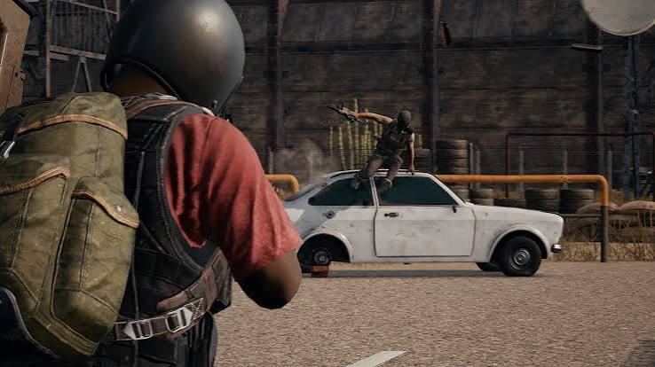
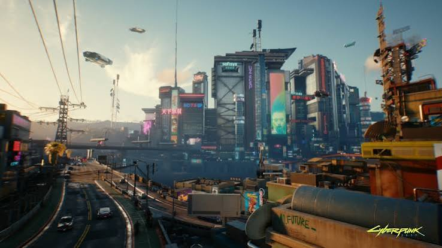
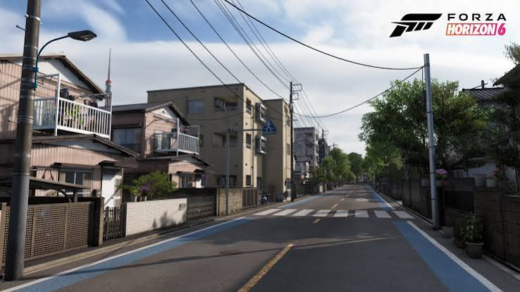

| Oyun Performansı Sonuçları |
|
|
 |
PUBG BATTLEGROUNDS |
| 1080p Ultra Ayarlar: 240-360 FPS 1440p Ultra Ayarlar: 200-300 FPS | |
| 2160p Ultra Ayarlar: 150-200 FPS 4320p Ultra Ayarlar: 100-130 FPS | |
|
 |
CyberPunk 2077 |
| 1080p Ultra Ayarlar: 200-250 FPS 1440p Ultra Ayarlar: 150-200 FPS | |
| 2160p Ultra Ayarlar: 100-150 FPS 4320p Ultra Ayarlar: 60-120 FPS | |
|
 |
Forza Horizon 6 |
| 1080p Ultra Ayarlar: 200-250 FPS 1440p Ultra Ayarlar: 150-200 FPS | |
| 2160p Ultra Ayarlar: 100-150 FPS 4320p Ultra Ayarlar: 60-120 FPS |